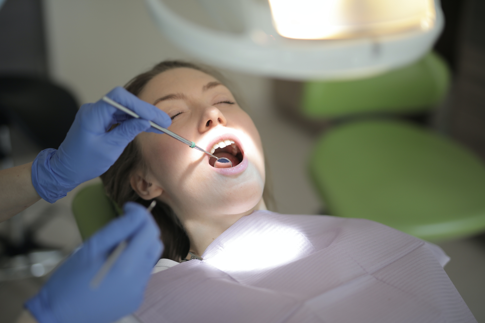
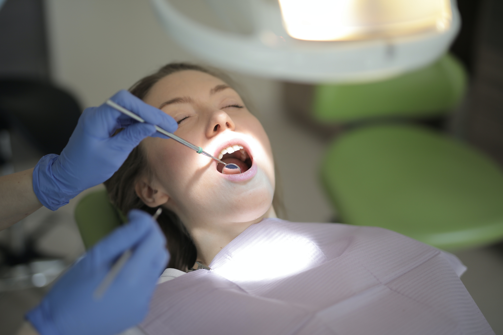

Gabinet Lekarski POZ
Działamy na lubelskim rynku medycznym od 2001 roku. Realizujemy bezpłatnie świadczenia lekarza podstawowej opieki zdrowotnej ma podstawie umowy z Narodowym Funduszem Zdrowia. W zakresie bezpłatnych świadczeń zdrowotnych realizowanych wchodzą m.in.: porady lekarzy rodzinnych i pediatrów, pielęganiarek i położnych oraz badanie EKG, badanie ciśnienia krwi, pomiar cukru i cholesterolu, badania laboratoryjne, szczepienia, zabiegi rehabilitacyjne, bezpłatne programy profilaktyczne układu krążenia i chorób płuc.
.jpg)
Poradnia Lekarza Rodzinnego
Nasza przychodnia lekarza rodzinnego w ramach umowy z NFZ prowadzi opiekę dla dzieci i dorosłych.
Punkt szczepień
Wykonujemy pełny zakres szczepień obowiązkowych i ochronnych dla dzieci i dorosłych, w tym szczepienia przeciw grypie
Pediatra
Nasza przychodnia, to także profesjonalna opieka pediatryczna. Opiekujemy się pacjentami od najmłodszych lat
Diagnostyka
Odpowiednia diagnostyka pozwala na szybkie wykrycie problemu, a co najważniejsze rozpoczęcie szybkiego leczenia.


 
